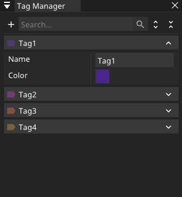
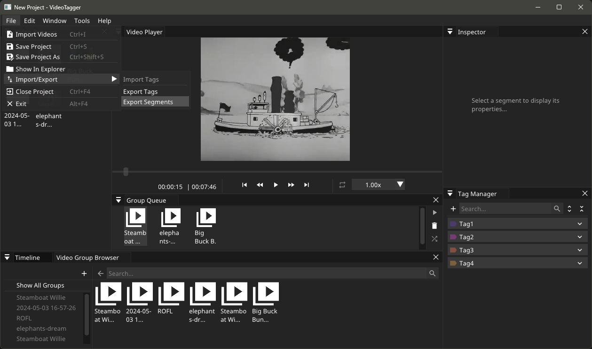

|
VideoTagger
|
|
VideoTagger
|
In order to start tagging a video or a group of videos you need to have at least one tag (see Tag Management) and have a video group currently playing (see Video Management). Once that's all setup click the plus button on the timeline and select the tags you want to use. Next, right-click on the timeline. A menu will appear with the following options:
After selecting one of the first four options, a popup will appear. If you selected one of the options with "timestamp", you'll be able to select the time at which the timestamp will be created. If you selected one of the options with "segment", you'll be able to select where the segment will start and end. Clicking "OK" will create the timestamp or segment.
Selecting "Start segment at marker" won't have immediately visible effects. However, once you click "End segment at marker", a popup will appear, showing the start and end times set to the positions of the time marker when "Start segment at marker" and "End segment at marker" were selected, respectively. If you click "Start segment at marker" and then "End segment at marker" without moving the time marker, a timestamp will be created instead of a segment.
If you try to create a timestamp/segment which would overlap an already existing timestamp/segment a popup will appear asking whether to merge the segments. Selecting "Yes" will merge the segment you want to create and the existing segment, while selecting "No" will cancel the timestamp/segment creation.
All tag related operations such as adding, modifying and removing a tag can be done via the Tag Manager window.
All tags shown there are stored in the project file and can be used on the Timeline window to create segments or timestamps. To learn more about the Timeline head over to Video Timeline page.

In order to export tagging data of the active video group (see Video Management for how to use video groups) select the Export Segments option from the Import/Export list in the File menu.

The tagging data in saved in a JSON file with the following structure: